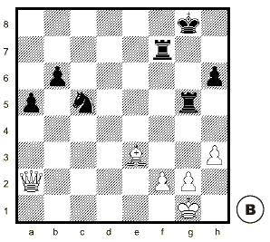
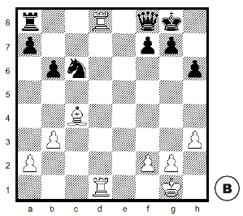

a) un jugador come una pieza defendida y el rival responde comiendo la pieza atacante;
b) un jugador come una pieza (defendida o no) y el rival responde comiendo otra pieza.
Para decidir si conviene comer una pieza defendida o para elegir entre defender o sacar una pieza atacada, hay que comparar el valor de las piezas que se pueden cambiar:
a) el cambio es equivalente cuando se cambian piezas del mismo valor;
b) el cambio es desigual si se cambian piezas de distinto valor: mientras un jugador gana material, su rival pierde material.
¿Cómo se calcula la ganacia de material? Se resta el valor de la pieza que se come primero menos el valor de la pieza que va a comer el rival en la jugada siguiente.
Se dice que se gana calidad (2 puntos) cuando se come una Torre, a cambio de un Caballo o un Alfil.
La simplificación es la repetición de cambios equivalentes. Sólo le conviene simplificar al jugador que tiene una ventaja material suficiente para ganar o al que trata de lograr tablas.
Al jugador que va perdiendo casi nunca le conviene cambiar piezas porque cuanto menos material queda en el tablero, más importancia adquiere la ventaja del rival.
Ejemplos: Cambios de piezas
|  |
Si las blancas comen el Caballo el cambio es equivalente: 1. Axc5, Txc5 (3-3= 0) Si las blancas comen la Torre de g5 ganan calidad: 1. Axg5, hxg5 (5-3= 2) Pero si las blancas comen la Torre de f7 pierden material: 1. Dxf7+, Rxf7 (5-9= -4) |
|  |
Si las blancas comen la Dama ganan material y equilibran el partido: 1. Txf8+, Txf8 (9-5= 4) Si las blancas comen la Torre el cambio es equivalente: 1. Txa8, Dxa8 (5-5= 0) Pero si las blancas comen el peón de f7 pierden material: 1. Axf7+, Rxf7 (1-3= -2) |